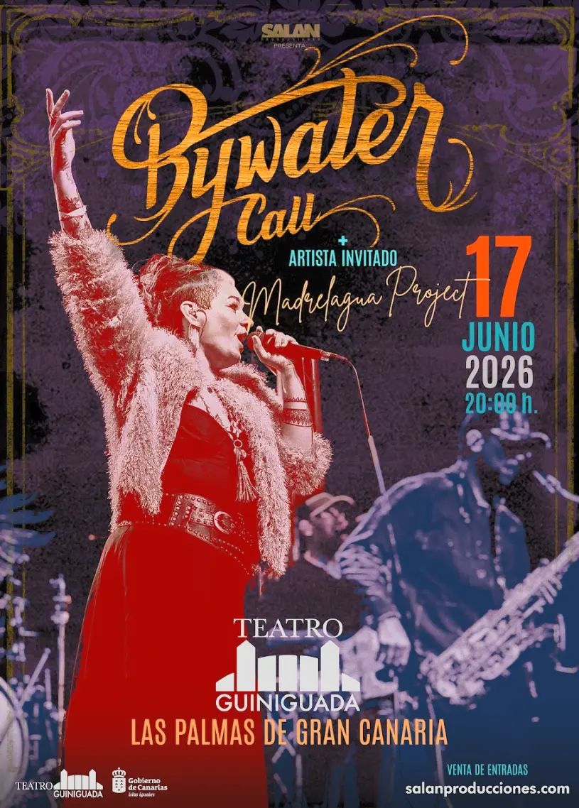

+ artista invitado Madrelagua Project
Una de las bandas más poderosas del soul y roots rock llega a Las Palmas de Gran Canaria. Meghan Parnell y sus seis músicos traen un directo que ha conquistado escenarios en 10 países — 140 conciertos en 2024 — y esta noche aterrizan en el Teatro Guiniguada.
Mira un adelanto del directo antes del 17 de junio
Siete músicos. Un directo que no se olvida. Bywater Call es una banda de Toronto, Canadá, liderada por la vocalista Meghan Parnell y el guitarrista Dave Barnes. Desde 2017, han construido una reputación de shows que dejan al público sin palabras.
Su música mezcla soul sureño, roots rock, gospel y funk de Nueva Orleans con una honestidad que recuerda a Aretha Franklin, Otis Redding y The Band. Nominados a los UK Blues Awards 2024 como Artista Internacional del Año junto a Larkin Poe, Joanne Shaw Taylor y Beth Hart.
461 butacas en el Teatro Guiniguada. Las entradas son limitadas.
🎟 Comprar EntradasSalan Producciones lleva más de una década trayendo música en directo a Canarias. De la mano de Juan Salán, productor y promotor de referencia en las islas, cada concierto es una experiencia cuidada desde la selección del artista hasta el último detalle del escenario. Bywater Call es exactamente el tipo de banda que define nuestra programación: artistas con un directo excepcional, música con alma y shows que van más allá del entretenimiento.
Si buscas conciertos de soul en Canarias, música en vivo en Las Palmas, roots rock en Gran Canaria o simplemente una noche diferente con artistas internacionales, estás en el sitio correcto. Salan Producciones programa regularmente conciertos de blues, gospel, soul sureño y rock en los mejores espacios de las islas.
Síguenos en salanproducciones.com para estar al tanto de todos los próximos conciertos, o contáctanos directamente si quieres saber más sobre nuestra programación. Juan Salán y el equipo de Salan Producciones se encargan de traer lo mejor de la escena internacional a Canarias.